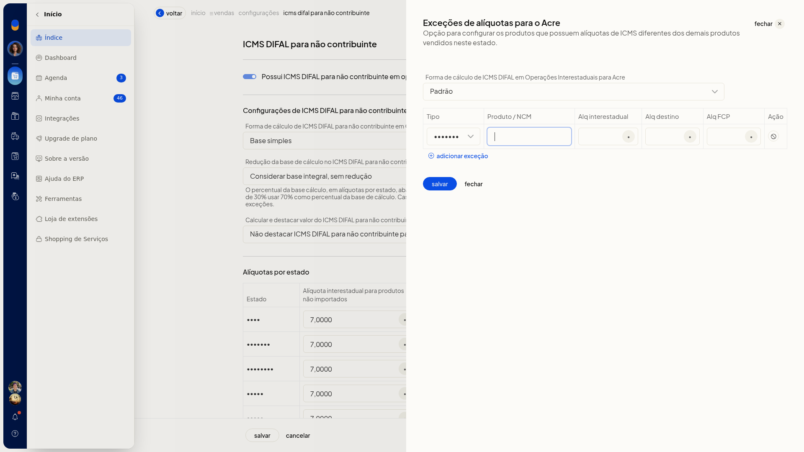
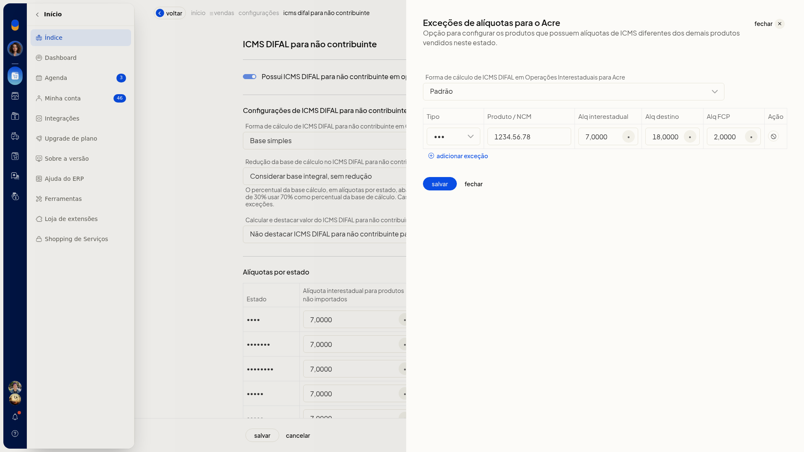
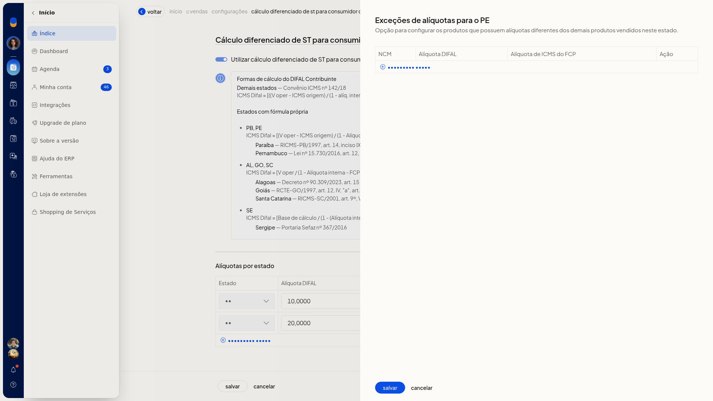
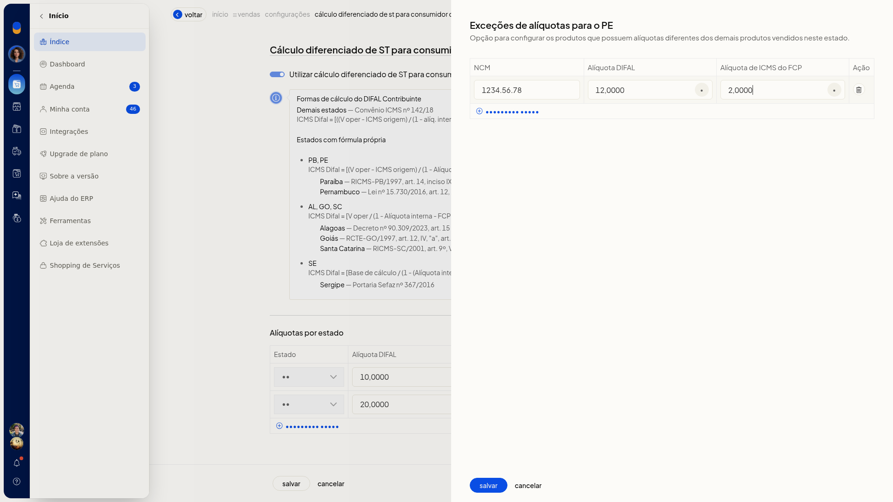

DIFAL e ST para contribuintes e não contribuintes
Importante
- No campo de redução da base, o percentual da tabela é a base restante, não o percentual de redução. Uma redução de 30% corresponde a 70% de base.
- No cálculo diferenciado de ST, para os demais estados vale o Convênio ICMS nº 142/18: ICMS Difal = [((V oper - ICMS origem) / (1 - alíq. interna)) × alíq. interna] - ICMS origem. Estados com fórmula própria são indicados na tabela.
Instruções
Configurar o ICMS DIFAL para não contribuinte
-
Acesse Configurações > Configurações ERP.
-
Abra a aba Notas Fiscais.
-
Abra ICMS DIFAL para não contribuinte.

-
Marque Possui ICMS DIFAL para não contribuinte em operações interestaduais (EC 87/2015) se a empresa recolhe esse diferencial.
-
Em Forma de cálculo, escolha Base simples, base por dentro (só destino), base por dentro dupla (interestadual + destino) ou base por dentro só destino descontando ICMS próprio.
-
Em Redução da base, escolha Considerar base integral, sem redução ou a redução pelas alíquotas do estado de destino.
-
Em Destacar DIFAL de origem, escolha se o DIFAL de origem deve ser destacado ou não.
-
Confira a tabela Alíquotas por estado: alíquota interestadual, alíquota interna de destino sem FCP e FCP.

-
Para uma exceção, clique em Editar no estado.
-
Em Forma de cálculo da exceção de alíquota, escolha Padrão, Base simples ou uma das bases por dentro.
-
Clique em Adicionar exceção e informe Tipo Produto/NCM, Produto/NCM, Alq interestadual, Alq destino e Alq FCP. Use alíquota com vírgula decimal, no padrão já exibido na tabela. Alq destino é a alíquota interna de destino, sem FCP.

- Clique em Salvar. A empresa passa a calcular o ICMS DIFAL de não contribuinte nas operações interestaduais com a base, o destaque e as alíquotas definidos, inclusive exceções por produto ou NCM.
Configurar o cálculo diferenciado de ST para consumidores contribuintes
-
Em Configurações > Configurações ERP > Notas Fiscais, abra Cálculo diferenciado de ST para consumidor contribuintes - DIFAL.
-
Ative Utilizar cálculo diferenciado de ST para consumidores contribuintes.
-
Leia a orientação da tela sobre o Convênio ICMS nº 142/18 e confira na tabela quais estados têm fórmula própria.
-
Informe ou revise a alíquota DIFAL e a alíquota de ICMS do FCP de cada estado. Use editar na linha do estado ou adicionar regra.

-
Na exceção do estado, informe NCM, Alíquota DIFAL e Alíquota de ICMS do FCP, com vírgula decimal.

-
Clique em Salvar. O cálculo de ST dos consumidores contribuintes passa a usar as alíquotas DIFAL e FCP informadas por estado e as exceções de NCM, em vez da regra geral.
Resultado
Ao reabrir cada tela, as regras já gravadas de DIFAL e de ST aparecem preenchidas.